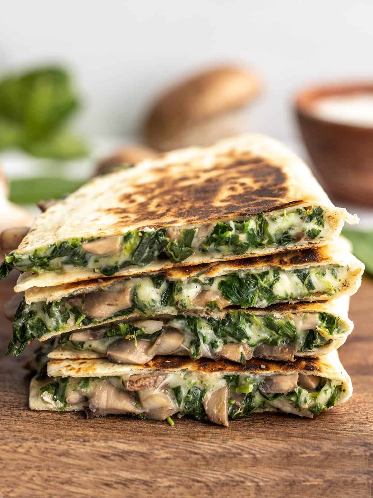

Spinach and Mushroom Quesadillas

Description
Im of the opinion that pretty much everything tastes better in a toasted tortilla. I often take leftover ingredients from my fridge and turn them into a tasty quesadilla. So that’s exactly what I made with the leftover frozen spinach in my freezer. Easy, cheesy, creamy Spinach and Mushroom Quesadillas!
To craft these Spinach and Mushroom Quesadillas, I used my Creamy Chicken and Spinach Quesadillas as a template. The filling is a combination of your main ingredient (in this case mushrooms and spinach), cheese, and a little bit of sour cream to make everything extra creamy and delicious. That little bit of sour cream really takes the quesadillas to the next level!
- Mushrooms
- Mozzarella
- Sour Cream
- Tortillas
- Spinach
Steps
- Slice the mushrooms and add them to a skillet with the cooking oil, garlic powder, crushed red pepper, and half of the salt and pepper. Sauté over medium until the mushrooms have release all of their water and it has evaporated out of the skillet. Set the mushrooms aside.
- While the mushrooms are cooking, thaw the frozen spinach then squeeze out as much of the water as possible. You should have about one cup of spinach (loosely packed) once squeezed.
- Add the mushrooms, spinach, shredded mozzarella, sour cream, and another ⅛ tsp each of salt and pepper to a bowl, then stir to combine.
- Add about ½ cup of the cheesy spinach mushroom mixture to each tortilla, spread it out to cover one side of the tortilla, then fold to close.
- Cook the quesadillas in a skillet over medium heat until brown and crispy on the outside and melty on the inside (I do not use butter or oil in the skillet, but can if you want a more fried texture).
- Slice the quesadillas and serve!